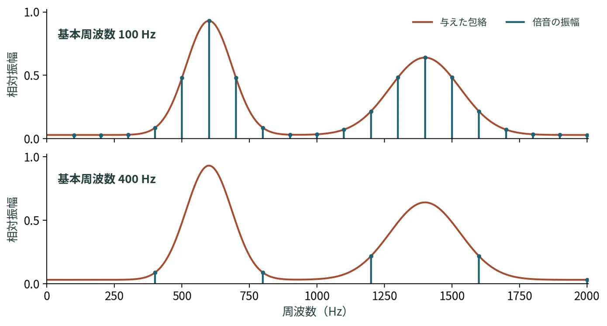

第46章 母音を歌う機械、歌いながら変形する管
声を「音源×声道のフィルタ」に分け、母音と音高を別々の変数として扱う。
この章で学ぶこと
- フォルマントの意味と、倍音の線との関係を知る
- 高い声ほど声道の情報が読みにくくなる理由を理解する
- 自分の声で、母音と音高を分けて録音・分析する
一つの音符の中で別の旋律が動く
楽な高さで「アー」を一拍伸ばし、その高さのまま「イー」に移る。次は口をほぼ同じ形に保ち、低い「アー」から少し高い「アー」へ滑らせる。最初の操作では母音を識別する手掛かりが動く。次の操作では音高が動く。譜面に同じ長音符を一個だけ書いても、「アイ」の中で生じた音色の推移は書き尽くせない。声を合成するには、音高を担う周期と、声道がどの周波数を通しやすいかを、少なくとも別の変数として指定する必要がある。
声門で周期的に生じる気流を音源とし、喉から唇までの声道を管の集まりとして近似する。舌の位置、唇の開き、管の断面積の分布を動かすと、共鳴しやすい周波数が移る。声のスペクトルでエネルギーが集中する帯域をフォルマントと呼ぶ。これは共鳴の手掛かりである。倍音の線が粗く離れると、一番大きな線の周波数と管の共鳴周波数は相当にずれうる。
声道が譜面を読んだら何を変えられるか
音を短区間に切り、その区間では口の形も基本周波数も一定、声道の作用は線形かつ時不変と仮定する。 を基本周波数、 を第 倍音の複素振幅、 を声道と放射を合わせた周波数応答、 を観測される複素振幅とする。すると
導出を読む（読まなくても先へ進めます）
入力を複素指数関数の和で表す。単一成分への応答は、時刻 、インパルス応答 、遅れ を用いると である。時刻に依存する因子を積分から取り出すと が残る。線形性により各成分を足せる。したがって定常な有声音の線の位置は整数倍のまま、各線の大きさと位相が変わる。この計算が声門と声道の相互作用を弱いとみなした近似であることに注意したい。

図では各倍音の入力振幅を等しく置いた。横軸600 Hzと1400 Hzに置いた滑らかな二つの山は説明用の仮想的な応答で、特定の話者・母音の測定値ではない。 Hzなら第6倍音が最初の山頂を試す。 Hzなら最寄りは400 Hzと800 Hzで、600 Hzでの応答を直接測った点はない。二本の間を曲線で補間しても、その曲線は仮定を付け加えている。有限個の観測点で同じ値を取り、観測点間だけ異なる滑らかな関数はいくらでも作れるからである。
口の外から声道を測る
ソプラノが高音を伸ばすとき、口が開く。声から逆算しようとすると、まさに調べたい高音で使える倍音が疎になる。Joliveau（ジョリヴォー）らは、歌っている口元から広い周波数帯の信号を与えた。歌手が発する線スペクトル以外の周波数も探針にできる。実験した歌手の高域では、低音域で観測された第一共鳴に基本周波数が接近すると、第一共鳴も基本周波数に沿って上がる傾向があった。一音を長く保つ場面でも、歌い手はエネルギーを通す共鳴器を演奏している。
やってみよう
対照実験。 楽に伸ばせる低音で「ア・イ・ア」を、次に一つの母音で低・高・低を録音する。マイクと口の距離、部屋、声量の目安をそろえる。各母音の中央から0.1秒を切り出し、ハン窓を掛け、同じ縦軸範囲の振幅スペクトルを描く。毎秒の波の数を線の間隔から読み、強い線が集まる周波数帯を別の色で囲む。口の動きと舌の動きは同時に映像で記録すると、録音からの推定と観察を照合できる。窓幅0.1秒なら離散フーリエ変換の周波数格子は10 Hz間隔である。格子をゼロ詰めで細分しても、測っていない倍音間の声道情報は増えない。
反例
反例。 息だけでささやくと、多くの場合、声帯の明瞭な周期振動を欠く。それでも母音を聴き分けられる。雑音に近い励振でも、声道による帯域の選択が残るからである。第2の反例は破裂子音のような急激な変化である。0.1秒を一つの定常な応答として平均すれば、その間の時間順序を捨ててしまう。窓付き解析に戻り、時間分解能をどこまで必要とするか決め直そう。
実際の歌と小課題
ベル研究所の《Daisy Bell》では、冒頭の呼び掛けを二度聴く。一度目は歌声に合わせ、口を閉じて旋律だけを鼻歌にする。二度目は歌わずに同じ音節の口の形を真似る。一つの音節の中にも母音から別の母音への移行が聞こえる。1961年のこの録音では John Kelly と Carol Lochbaum が歌声を、Max Mathews が伴奏を担当した。旋律を作ること、言葉を構音すること、両者を同じ時計で動かすことを切り分けると、合成歌唱の設計図が見えてくる。
問い
Hzの音源で、隣り合う第4・第5倍音の間に狭い共鳴がある。二本の振幅から山頂の位置を一意に復元できるか。別の高さを試せるとき、1125 Hz付近を調べる方法を示せ。
解答を見る（先に自分で考えてから）
解答。 二本は1000 Hzと1250 Hzにしかない。山の幅・形・音源のスペクトルを未知とする限り、山頂は決まらない。励振器を Hzにすれば第5倍音が1125 Hzに来る。人工の管で音源振幅を校正し、管の形を保ったまま測るなら比較に意味がある。人間が二つの高さを歌う実験では、共鳴器自身が変形しうる。この条件を独立に調べたことが、口元からの測定の強みである。
ここだけ押さえる
- 定常な有声音では、線の位置は倍音のまま、大きさだけが声道で変わる。
- 基本周波数が高いと倍音の間隔が粗くなり、共鳴の山を直接測れない。
- ささやき声でも母音が分かるのは、声道による帯域の選択が残るから。
この章の資料
- ソプラノの口元に加えた励振と、歌手ごと・母音ごとの共鳴の推移を読む。特に基本周波数と共鳴周波数を同じ軸に描いた図に注目する。Joliveau・Smith・Wolfe 原著 PDF
- 歌詞に含まれる母音と作曲された音高の関係を、ヴァーグナーの複数の役について検討した研究。譜面を用いた統計と歌手の生理計測の違いを比べられる。Smith・Wolfe 原著 PDF
- 合成歌声を聴いてから、当時の制作工程とレコードについての記録を読む。カーネギーメロン大学の試聴教材／米国議会図書館の録音解説